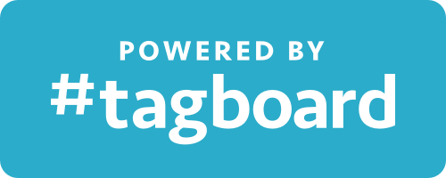

As the design co-founder of a new technology startup the pressure was on to create a logo and associated brand that would help both establish and distinguish us in the market – and it had to stand the test of time…
Research for the brand started months earlier as I surveyed various visual elements from across the technology industry, mostly from consumer brands and companies. I knew I wanted to create a simple brand that included the name in the logo – a logotype – but also recognized the need to have a strong icon or mark.
After test driving a bunch of typefaces and logotype combinations, I landed on a modified version of the brand name set in Seravek, from the same foundry as did Facebook font, Klavika. It satisfied the requirements of being familiar and friendly but was also customizable and felt high-brow.
I also created an icon mark that integrated the hash symbol and Seravek’s lowercase “T”.
As part of my research I also looked into color cognition and response. I knew color is an extremely important part of establishing a lasting and strong brand, and I determined although the blue-green spectrum of the wheel was overcrowded, breaking convention just for the sake of being unique wasn’t wise, especially given the type of emotional reactions we wanted to engage – things like friendliness, accessibility, ease of use, etc.
I created a base color scheme that included primary and secondary/accent colors that translated well (or mostly well) across mediums.
During the process, one unique tool I used to “test” the decisions I was making was a presentation slide deck. I wanted to tell a story with the brand, and used the slide deck to help anchor the story arch. Eventually I converted the deck into an internal pitch that I showed to my co-founders before officially launching the brand (by virtue of ordering business cards).
The logo itself was later integrated into an attribution badge to help viewers identify Tagboard’s public screens. It actually became an important part of our partnership strategy with source networks like Twitter and Facebook because if a public social screen had our logo it meant the content being shown was sanctioned. And despite early push-back from customers, the “Powered by Tagboard” badge eventually became a sort of badge of honor, signaling a company’s forward-thinking and taste. (Tagboard has a reputation of having the best looking and most natural social screens).
← Back to home{kind=link}
{kind=link}
{kind=link}
{kind=link}
{kind=link}